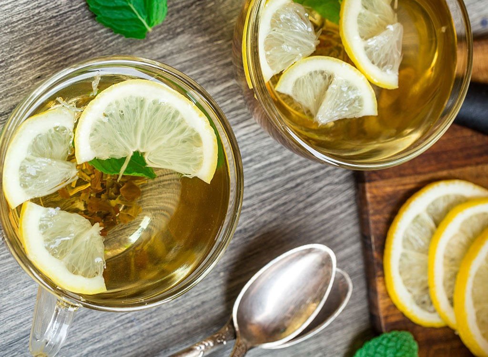

-

GreenTea with Lemon
Diet Drink for you!
-
GreenTea with Lemon
Diet Drink for you!
-

GreenTea with Lemon
Diet Drink for you!
Diet Drink for you!
Diet Drink for you!
Diet Drink for you!
A brewed green tea is typically green, yellow or light brown in color, and its flavor profile can range from grass-like and toasted (pan fired) to vegetal, sweet and seaweed-like (steamed). If brewed correctly, most green tea should be quite light in color and only mildly astringent.
¼ cup lime juice, plus 3 limes sliced for garnish
¼ cup lemon juice, plus 2 lemons sliced for garnish
5 cups water
5 tea bags, Jasmine Green Tea Bags
¼ cup honey, plus more if desired
18 mint leaves
Step 1
Transfer lime juice and lemon juice to a large pitcher
Step 2
Bring 2 cups of water to boil in a medium saucepan. Once the water reaches 170 to 185°F, add 5 green tea bags into the hot water.
Step 3
Steep for 3 minutes or according to package instructions.
Step 4
Using a large spoon, gently press the tea bags against the pan to extract the tea further. Carefully remove and discard the tea bags from the saucepan.
Step 5
Add honey, and stir until dissolved. Pour tea and honey mixture into the pitcher.
Step 6
Add 3 cups of cold water to the pitcher. Stir until well blended. Add more honey if desired.
Step 7
Serve chilled green tea with ice cubes, a few lime slices, lemon slices and 3 fresh mint leaves in each glass.
2-3 tq. Saucepan
Instant-Read Thermometer
protein: 5g
{kind=link}
{kind=link}